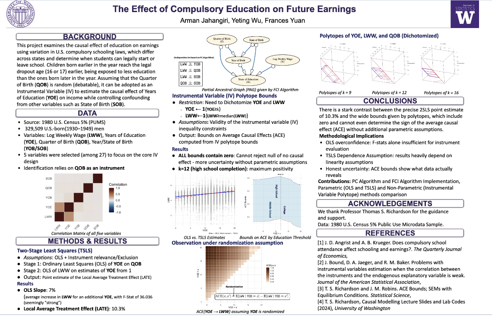
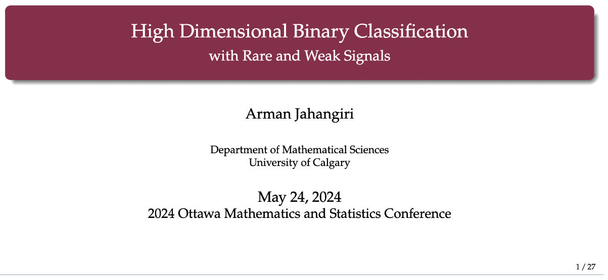
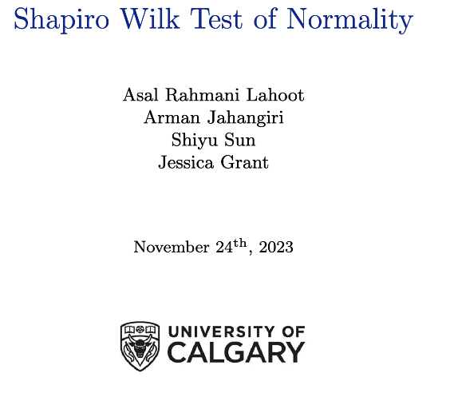
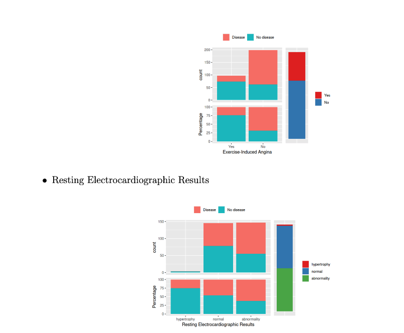
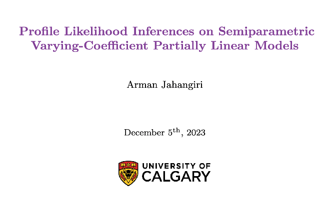
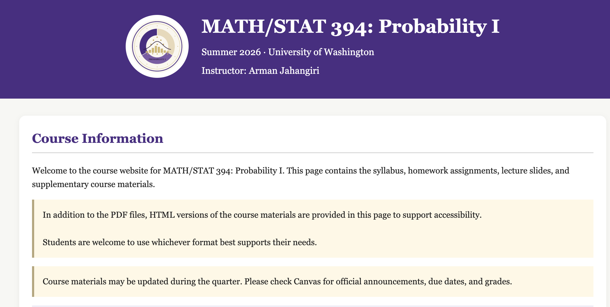

R2
Ongoing work
Phase Diagram of QDA for High-Dimensional Gaussian Mixtures
Asymptotic analysis of classification regimes under sparse, weak signals and high-dimensional covariance structure.
Arman is a PhD student in the Department of Mathematics at the University of Washington. Their interests center on statistical data analysis, synthetic statistical inference, and high-dimensional probability and statistics.
Arman received a BSc in Mathematics and an MSc in Statistics. Arman's master’s thesis, supervised by Dr. Jingjing Wu at the University of Calgary, studied binary classification of high-dimensional data using Quadratic Discriminant Analysis.
Arman is interested in university teaching and education, with a focus on student learning and engagement, inclusive teaching practices, curriculum and course design, and the development of effective learning environments.
Arman’s interests center on statistical data analysis, synthetic statistical inference, and high-dimensional probability and statistics.
Asymptotic analysis of classification regimes under sparse, weak signals and high-dimensional covariance structure.
Functional inequalities, concentration of measure, geometry, and probabilistic structure in high dimensions.
Read the manuscript ↗Theoretical phase diagrams for successful and impossible classification under progressively richer Gaussian mixture models.
University of Calgary PRISM ↗Compact snapshots of research, talks, and statistical projects.


Contributed talk at the Ottawa Mathematics and Statistics Conference and second-place Three-Minute Thesis presentation.

Theory, implementation, benchmark reproduction, and comparison with alternative normality tests.


Contributed talk at the University of Saskatchewan Data Science Boot Camp.
Arman's teaching emphasizes conceptual understanding, inclusive and active participation, formative assessment, intentional course design, and helping students develop confidence, and independence.
Arman designed and delivered a complete probability course, including lectures, assignments, assessments, review materials, accessibility arrangements, and a public course website with PDF/HTML resources, annotated slides, recordings, and interactive visualizations.
Visit course website
“Arman appeared confident and experienced at the board.”— Clare Minnerath · MATH 124 observation
“Students were engaged and working diligently.”— Dr. Andrew Loveless · MATH 125 observation
“You are building a solid classroom presence.”— Dr. Andrew Loveless · MATH 125 observation
“Effective and carefully prepared.”— Dr. Natalie Naehrig · MATH/STAT 394 observation
“Calm, well paced, and well matched to the course level.”— Dr. Natalie Naehrig · MATH/STAT 394 observation
Teaching mentorship and professional-development guidance have also included Charles A. Camacho through UW’s TA-development community.— Teaching mentorship
“The course website was very well made and organized and all the materials prepared for exam prep were very useful.”— Student · MATH/STAT 394 Probability I
“I liked that Arman made visualizations of some of the concepts we were learning. Seeing a visual representation of the concepts helped a lot with my understanding.”— Student · MATH/STAT 394 Probability I
“The examples, practice problems, and clear explanations contributed the most to my learning.”— Student · MATH/STAT 394 Probability I
“Arman’s advanced understanding of mathematics gave a broader point of view towards the material comparatively to the curriculum itself.”— Student · MATH 120 Precalculus
“When Arman went over the test prep, I understood the material better.”— Student · MATH 120 Precalculus
“The problem walk-throughs were very helpful in my learning.”— Student · MATH 125 Calculus II
“The board explanations were really useful; learning the same thing in a different way helps to understand it better.”— Student · MATH 125 Calculus II
“Time spent going over problems was useful and clear.”— Student · MATH 126 Calculus III
Arman has taught and tutored mathematics and statistics beyond university courses, including work as a lecturer in the University of Calgary Math Circle, private one-to-one tutoring, and mathematics instruction at Mathnasium.
“Arman was super knowledgeable, patient, always paused to confirm I was following and did not talk down to me. They’re an excellent teacher.”— Cassandra · Mathematics student
“Arman is a really good tutor! They’re patient, extremely knowledgeable and can explain concepts in a clear and understandable way.”— Andrea · Statistics student
“Great lessons, easy to learn and understand. Highly recommend Arman.”— Dave · Mathematics student
“Arman’s thorough knowledge of the subject matter as well as their ability to provide invaluable insight into math methodology has enabled my son to apply Arman’s valuable instruction.”— Erik · Parent
“Arman is a great tutor. Very intelligent. They have been helping me prepare for my university classes, and are patient and explain solutions well.”— Steven · Mathematics student
The dossier brings together Arman’s teaching philosophy, instructional practices, course design, student evaluations, supervisory observations, professional development, and selected teaching artifacts.
Selected leadership, mentoring, outreach, and academic-community work.
University of Calgary · student advocacy, inclusive academic-community building, executive leadership, departmental coordination, and collaborative event organization.
Led mathematics enrichment sessions for high-school students, including topics such as number bases and combinatorics.
Supported incoming international students with academic transition, community connection, and cross-cultural adjustment.
Certificate ↗Alberta Teachers’ Association · evaluated and ranked student submissions collaboratively with educators.
Calgary Pride · volunteer recruitment, scheduling, training coordination, and event logistics.
Faculty of Graduate Studies' Graduate Award Competition Scholarship · University of Calgary
Three-Minute Thesis Competition — Second Place · University of Ottawa
International Graduate Tuition Award · University of Calgary
McFarlane Endowed Scholarship · University of Washington